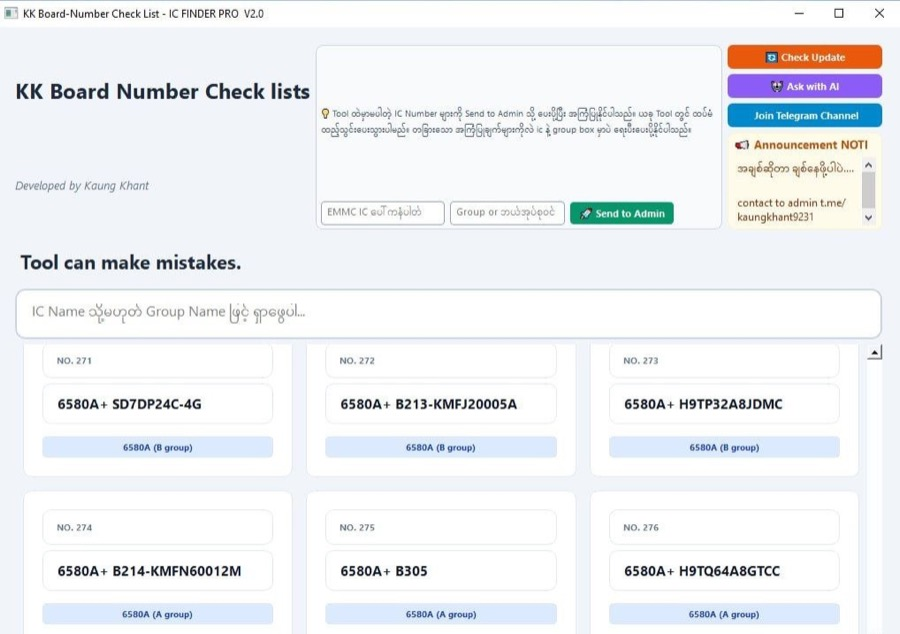
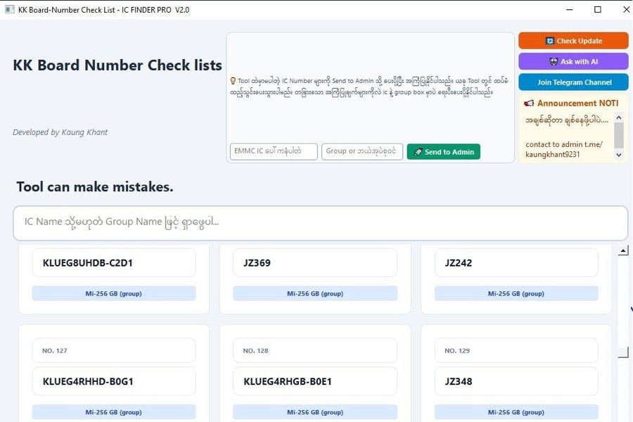

Windows
For Windows PC — the desktop edition of IC Finder Pro.


- 🚀 Instant IC & Group Search — type an IC number, the group appears in seconds.
- 🌍 Cloud-Based Live Database — always the latest data, no manual updates needed.
- 📢 Live Announcement Box — market news & warnings from admin in real time.
- 🎨 Dark / Light / System Theme — easy on your eyes, day or night.
- 🔑 Hardware ID Security — one-time License Key activation; reinstall freely, no new key needed.
Includes Check Update and Ask with AI.
Download for Windows